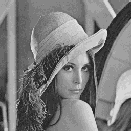
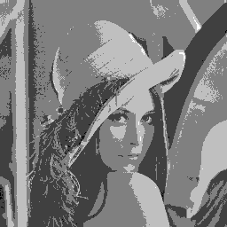
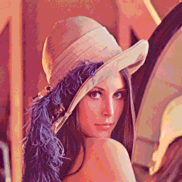
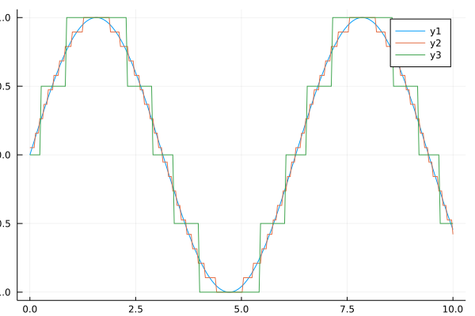

Quantization
Quantizes the image into discrete intensities levels.
Usage
Arrays, Grayscale Images and RGB Images
For arrays, grayscale images (Array{<:Gray}) and RGB images (Array{<:RGB}) we provide the following method:
quantization(X, levels; minv=0, maxv=1)We round the intensities of the array values to levels different value levels. minv and maxv indicate the minimum and maximum value of the discretization interval. For Normed datatypes like Normed{UInt8, 8} you can't choose values above 1 and below 0.
Examples
Images
Some examples with images.
using Noise, TestImages, Images
img_gray = testimage("lena_gray_256")
img_color = testimage("lena_color_256")
img_gray_noise = quantization(img_gray, 20)
img_gray_noise_heavy= quantization(img_gray, 5)
img_color_noise = quantization(img_color, 10)The images are in the same order as the commands are. The left image has 20 different value levels. The middle image only 5. The right image has 20 different value levels for each color channel.
| Gray image with 20 levels | Gray image with 5 levels | RGB image with 20 color levels each |
|---|---|---|
|  |  |  |
1D Arrays
Some examples with 1D arrays.
using Noise, Plots
x = LinRange(0.0, 10.0, 300)
y = sin.(x)
y_noise = quantization(y, 20, minv=-1, maxv=1)
y_noise_2 = quantization(y, 5, minv=-1, maxv=1)
plot(x,y);
plot!(x, y_noise);
plot!(x, y_noise_2);/home/travis/.julia/packages/GR/yMV3y/src/../deps/gr/bin/gksqt: error while loading shared libraries: libQt5Widgets.so.5: cannot open shared object file: No such file or directory
connect: Connection refused
GKS: can't connect to GKS socket application
GKS: Open failed in routine OPEN_WS
GKS: GKS not in proper state. GKS must be either in the state WSOP or WSAC in routine ACTIVATE_WSThe green curve consists of 5 different levels, the orange one of 20. As it can be seen, already 20 different value sample the original signal quite good. 